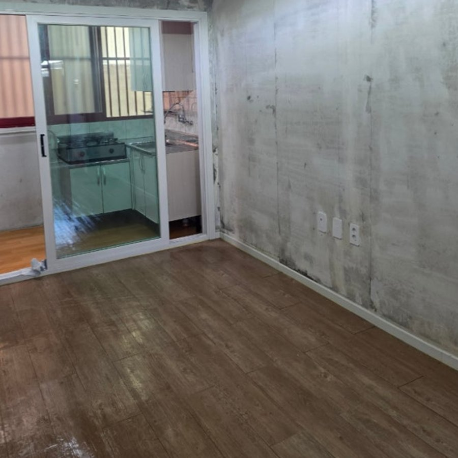
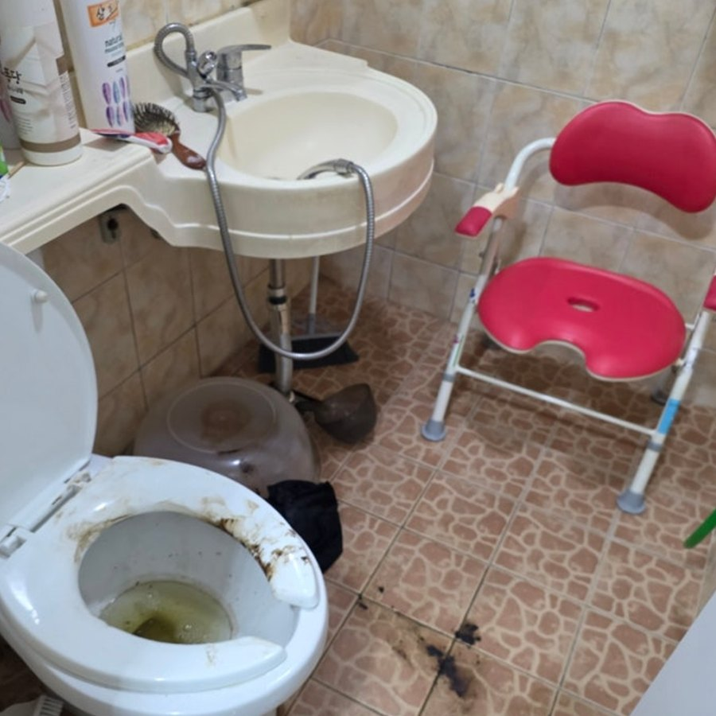
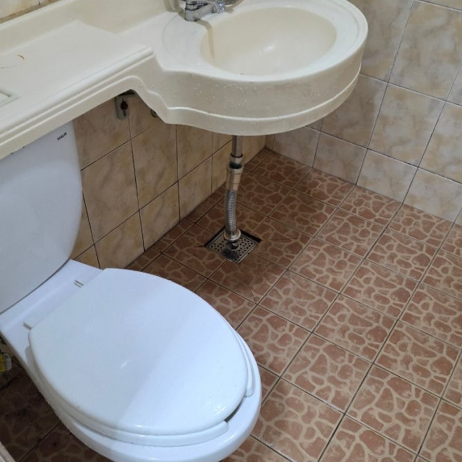
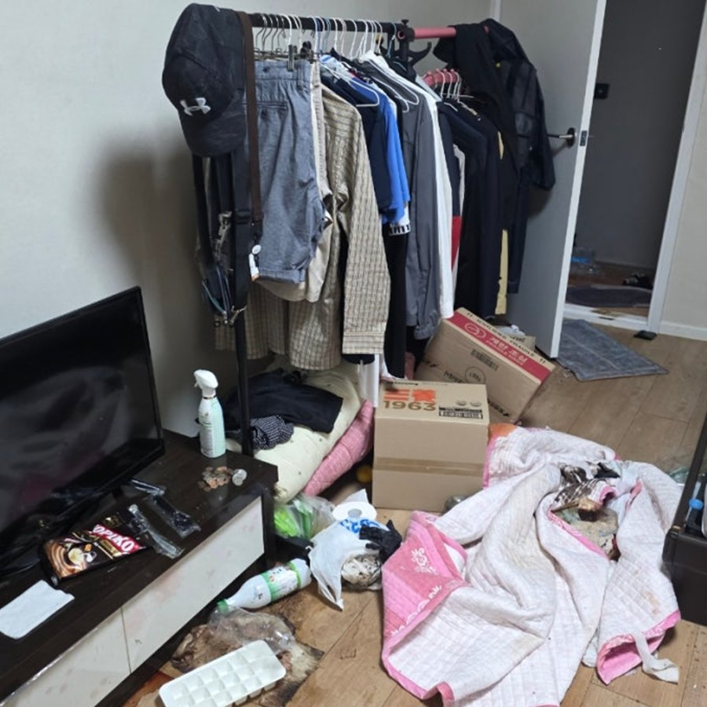
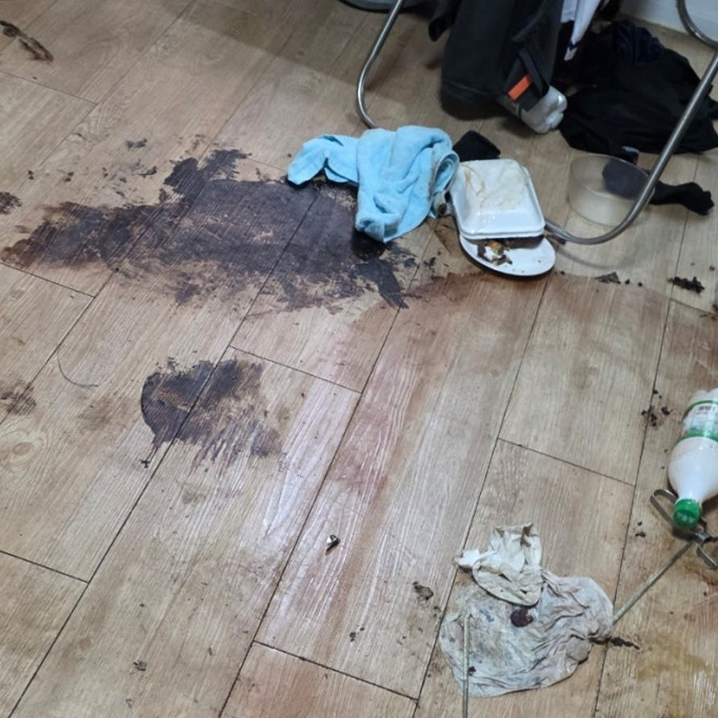
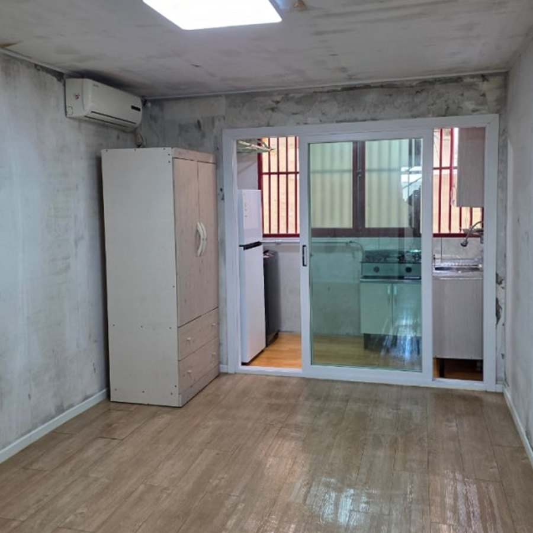

장기 방치 공간
오랫동안 사용하지 않아 생활 폐기물과 먼지, 오염이 쌓인 주거 공간

광주·전남·전북 특수청소 상담
장기 방치 공간과 심한 생활 오염, 고독사 이후 정리까지 현장을 확인한 뒤 꼭 필요한 작업 범위와 비용을 먼저 안내합니다.
상담 내용과 현장 정보는 외부에 공개하지 않습니다.
상담 가능 현장
현장마다 오염 정도와 폐기물 양이 다르므로 사진 또는 방문 확인 후 작업 방법을 안내합니다.
오랫동안 사용하지 않아 생활 폐기물과 먼지, 오염이 쌓인 주거 공간
유가족이 직접 정리하기 어려운 현장의 유품 분류와 잔여물 정리
욕실·바닥 등 일반적인 청소만으로 해결하기 어려운 집중 오염 구역
원룸과 주택 내부에 많은 짐과 생활 폐기물이 함께 쌓인 현장
안심 상담 원칙
민감한 현장 사진과 상담 내용은 견적 확인에만 사용합니다. 작업 전 범위와 비용을 설명하고, 의뢰인 동의 없이 범위를 임의로 늘리지 않습니다.
01
상담·주소·사진 등 현장 정보를 조심스럽게 다룹니다.
02
정리, 폐기, 청소 범위를 나누어 이해하기 쉽게 설명합니다.
03
보관할 물건과 확인이 필요한 물건을 먼저 구분합니다.
04
비대면 의뢰 시 사진으로 주요 진행 상황을 공유합니다.
실제 작업 사례
동일한 현장에서 촬영한 작업 전·후 사진입니다.


오염 상태를 확인하고 내부 잔여물 정리와 표면 청소를 순서대로 진행했습니다.

다량의 생활 폐기물을 분류·반출하고 바닥과 생활 공간을 정돈했습니다.


오염된 구역을 확인한 뒤 잔여물을 제거하고 바닥을 집중적으로 정리했습니다.
진행 절차
전화나 카카오톡으로 지역과 현장 상황을 알려주세요.
오염과 폐기물 상태를 보고 작업 범위와 비용을 안내합니다.
보관품을 구분한 뒤 합의된 순서에 따라 작업합니다.
현장 또는 사진으로 결과를 확인하고 정산합니다.
견적 기준
공간 크기, 폐기물 양, 오염 범위, 작업 인원과 차량·장비 필요 여부를 함께 확인합니다. 사진만으로 확정하기 어려운 현장은 방문 후 최종 견적을 안내합니다.
FAQ
열쇠 전달과 작업 범위를 협의할 수 있다면 비대면 진행도 가능합니다. 주요 과정과 완료 상태는 사진으로 공유합니다.
사진과 주소, 상담 내용은 견적과 작업 진행 목적으로만 확인하며 외부에 임의로 공개하지 않습니다.
장기 방치, 다량 폐기물, 심한 오염처럼 일반적인 생활 청소보다 분류·반출과 집중 작업이 더 필요한 현장을 특수청소로 상담합니다.
원룸 규모는 당일 마무리되는 경우도 있지만 폐기물 양과 오염 상태에 따라 달라집니다. 현장 확인 후 예상 일정을 안내합니다.
작업 전에 보관 기준을 확인하고, 확인이 필요한 물건은 따로 분류해 의뢰인에게 안내합니다.
오염 원인과 건물 마감재 상태에 따라 결과가 달라질 수 있습니다. 현장을 확인하고 가능한 범위와 추가 조치 필요 여부를 솔직하게 안내합니다.
광주·전남·전북을 중심으로 출장합니다. 기본 상담과 방문 견적은 무료이며, 먼 지역은 일정 협의가 필요할 수 있습니다.
말하기 어려운 상황도 부담 없이 알려주시면 필요한 작업 범위부터 차분하게 안내하겠습니다.
상담 및 방문 견적 비용은 무료입니다.